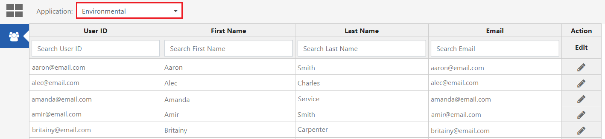
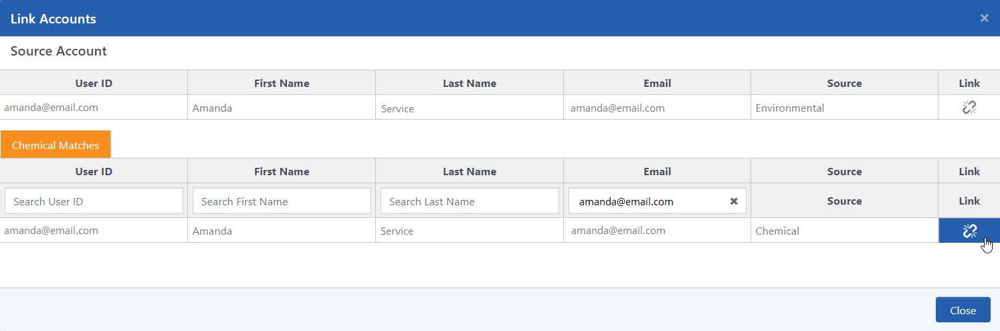
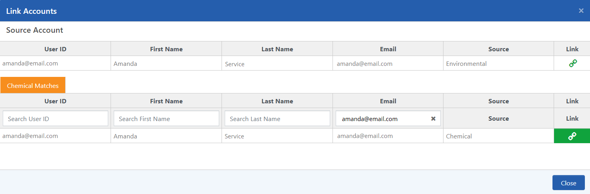

By default, the User Management App will search for matching accounts by email address. If a user has accounts in different applications that use a different email address, you can search for matching users using other criteria, like User ID, First Name, or Last Name.
